Art. 69. Concrete-Steel Beams With Single Reinforcement. Part 2
Description
This section is from the book "Cement And Concrete", by Louis Carlton Sabin. Also available from Amazon: Cement and Concrete.
Art. 69. Concrete-Steel Beams With Single Reinforcement. Part 2
Then if A B in Fig. 13 now represents fc and M S = fs, we have as before:
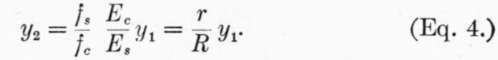The total stress on the concrete above the neutral axis is now represented by the area within the parabola, or (2/3)fc y1, and the total compression on section of width z is 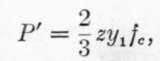 and the total tension 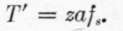.
As these are the two forces of a couple 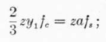 whence 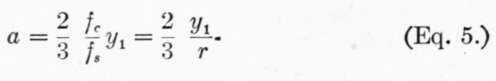.
The point of application of P' is on a line through the center of gravity of the parabola, or (5/8)y1 from the neutral axis, while the point of application of T' is at distance y2 below the neutral axis; the arm of the couple is, therefore, (5/8)yl + y2, and the moment of resistance 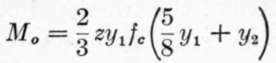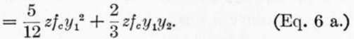.
Substitute value of y2 given in (4):
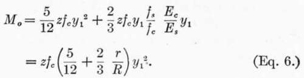In applying these formulas, it must be remembered that (1), (2), and (3) are applicable where the stresses are below the point at which the modulus of elasticity of the concrete begins to diminish, while (4), (5), and (6) illustrate the conditions for stresses above that limit.
588. Example
Design a beam of 10 foot span to carry a load due to 20 feet head of water.
Load per square foot = 20 X 62.5# = 1250#. Total load per foot width of beam = 12,500 lbs. = W1 First, using Eqs. 1, 2, and 3.
M = WL/8 = 187,500 inch-lbs. on beam 1 ft. wide, (z = 12).
Assume:
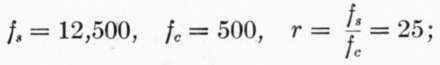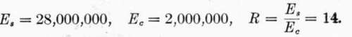From (3).
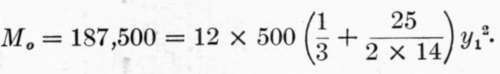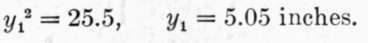From (2).
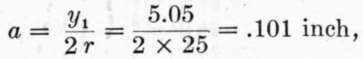az = .101 X 12 = 1.21 sq. in. of steel for beam 12 in. wide.
From (1):
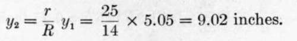If i = thickness of concrete below center of steel bars = 2 inches, h = total depth beam = 5.05 + 9.02 + 2.00 = 16.07 inches.
Second, using Eqs. 4, 5, and 6.
Assume:
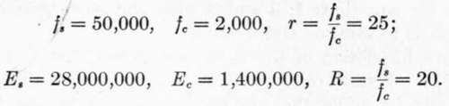As the stresses per square inch given above are approximately the breaking strengths of the materials, we must supply a factor of safety, say 4; i.e., design the beam to withstand four times the required bending moment before the stresses assumed above are attained.1 From (Eq. 6):
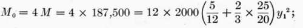Whence:
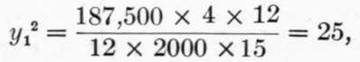 or, y1 = 5.
From (Eq. 5):
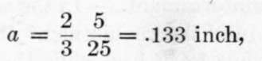 and az = 1.6 square inches of steel for 12-inch width of beam.
1 The method of using the breaking strengths of the materials, and computing the ultimate resistance equal to a certain number of times the desired strength, is considered inferior to that of assuming safe working stresses and computing directly the safe load. These safe working stresses should be fixed with reference to the elastic limit of the materials, rather than with reference to ultimate strength. The use here of the term factor of safety is for the momentary purpose of emphasizing the fact that the conditions assumed in deriving equation (6) are such as are supposed to exist under comparatively high stresses; but the formulas may evidently be applied to the safe working stresses the same as equations (1), (2) and (3), and in the present example the same size beam will result by eliminating "factor of safety" and using working stresses equal to one-fourth the values of the stresses assumed.
From (Eq. 4):
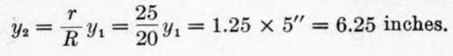If i = 2 inches as before, h = total depth beam = 5.00 + 6.25 + 2.00 = 13.25 inches.
It is seen that equations 4, 5 and 6 give, for the assumption made, a lesser depth of beam with more reinforcement than is given by equations 1, 2 and 3 with the corresponding assumptions as to stresses and moduli.
589. An inspection of the equations shows that to increase the amount of steel reinforcement in the tension side of the beam tends to move the neutral axis nearer to the tension side, and bring a greater area of cross-section of concrete into compression. If we arbitrarily decrease the depth of the beam which must withstand the same bending moment, it will increase the required area of reinforcement, and if carried too far will eventually raise fc beyond a safe value. On the other hand, if we take the beam as designed in accordance with equations 1, 2 and 3 and subject it to a greater bending moment than that for which it is designed, then so long as R remains constant, r also remains constant, that is, the steel and concrete are equally overstressed; but since R increases with the load, r will also increase, that is, the increment of stress in steel will be relatively greater than that in concrete.
590. Excessive Reinforcement
In the solution of the above example if we introduce the requirement that the total depth of the beam shall be but 12 inches, while the quality of the concrete is not improved, we may assume, as before, Es — 28,000,000 and Ec = 1,400,000. Let us introduce the same factor of safety, 4, by using fc = (2000/4) = 500 pounds instead of designing the beam for four times the required bending moment; as we have seen, this does not affect the result. Since the depth of the beam is fixed, fs and r cannot be assumed, but must be found, together with a.
We have: d y1 + y2 = 12 — 2 = 10 inches, and y2 = 10 — y1 From (6 a)
M0 = (5/12) x 500 y1^2 + (2/3) X 12 x 500 y1 (10 - y1) = 187,500,
Continue to:
- prev: Art. 69. Concrete-Steel Beams With Single Reinforcement
- Table of Contents
- next: Art. 69. Concrete-Steel Beams With Single Reinforcement. Part 3